TrustMyBot: Claude Code agents that never grade their own work
One agent plans, one builds, and a separate reviewer has to approve before anything is pushed. A free, MIT-licensed plugin for Claude Code.

It said done. It wasn't.
bro re-runs each task's checks when the work comes back, and pr-reviewer has to sign off on every commit before git push goes through.
It forgot everything after a restart.
Plans, decisions and review verdicts are saved in your project, so after a reset or a killed session bro picks up where it left off.
It drifted off task.
bro writes the plan and its checks before any code is written. swe builds one task at a time against that plan.
It touched files it shouldn't.
swe can only write inside its own copy of your repo, and force-pushes to protected branches are blocked.
Who it's for
Long-running, multi-task work on a codebase you keep coming back to. For one quick edit, plain Claude Code is leaner.
Install
Requires Claude Code 2.1.295 or later. In Claude Code, run:
/plugin marketplace add trustmybot/marketplace
/plugin install tmb@trustmybotThen:
@bro write a todo cliFree forever.
MIT. Fork it, ship it, sell it. TMB Enterprise for teams is in development and will never gate what the plugin does on its own.